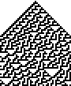

The Symbian Cellular Automata Machine in Python

Friday 15th April, 2011
by
Giles R. Greenway
Contents
1
Acknowledgments
2
Introduction
2.1
What's a cellular automaton?
2.2
Why? Are you some sort of maniac?
2.3
Things to do
3
Installing SCAMP
4
What do all the buttons do?
4.1
Select Automaton
4.2
Parameters
4.3
Draw
4.3.1
Snapshot
4.3.2
Start Recording
4.3.3
Finish
4.3.4
Stop
4.4
Seed
4.5
Seed Parameters
4.5.1
One-Dimensional Seeds
4.5.1.1
Single Defects
4.5.1.2
Alternating Blocks
4.5.1.3
Random
4.5.2
Two-Dimensional Seeds
4.5.2.1
Single Defects
4.5.2.2
Tabula Rasa
4.5.2.3
Random
4.6
Draw and Record
4.7
Create Rule
4.8
Palette
4.9
Resolution
4.10
Set Background
4.11
Save
4.12
Path
4.13
Help
5
One-dimensional cellular automata
5.1
Simple 1-D
5.2
Next-Nearest 1-D
5.3
Totalistic 1-D
5.4
Pascal's Triangle
5.5
Skewed Pascal's Triangle
5.6
Cyclic 1-D
6
Two-dimensional cellular automata
6.1
Simple 2-D
6.2
Next-Nearest 2-D
6.3
Totalistic 2-D
6.4
Conway's Life
6.5
Brian's Brain
6.6
Cyclic Demons
6.7
Langton's Ant
6.8
Turmites
6.9
B-Z Reaction
7
References